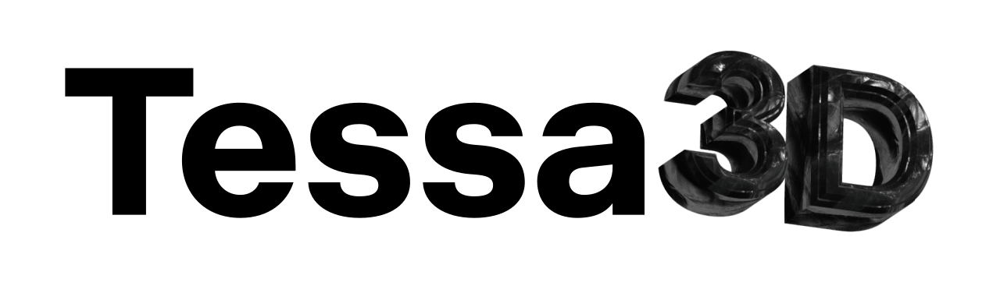

or
drop second mesh (.obj)
drop to load
Tessa3D stores a 3D mesh in a quantum state, reads it back, and shows you the result. Every wobble you see is shot noise or a simulated IBM chip. Nothing is added to make it move. It can also hold two meshes in the same qubits and morph between them, by changing how the state is measured rather than blending the shapes.
Moth's Tessa encoder packs the mesh's vertex positions into rotation angles on a small lattice of qubits: many values per qubit, laid out to suit the chip so no SWAPs are needed. Click the object, then pick Encode to set the load, mode, vertex layout, clamps and compression.
Decoding measures the state and turns the counts back into vertices. Decode sets the shots, frames, backend (noiseless or a chip's noise) and chip placement. ▶ reads once; ▶|| reads a run of frames and plays them.
In the tools on the right, why tessa compares Tessa with other encodings on a real chip layout, curves plots error against shots and compression, and read edges reads edge lengths straight from the state.
Set mode to θ+φ morph and drop a second mesh. A sits in each qubit's θ and B in its φ, in the same qubits. Turning the measurement basis from Z to X with morph t reads A, then B, then every shape between: a new measurement, not a blend.
With interference readout on, A and B sit on either side of selector qubits instead, and t turns the selectors, so the in-between shapes come from A and B interfering in the state.